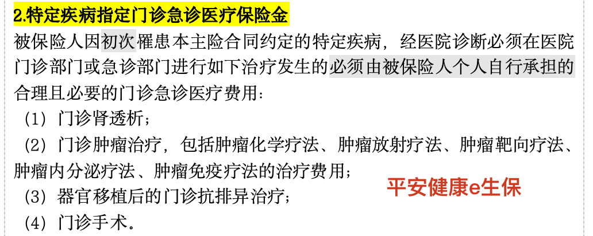
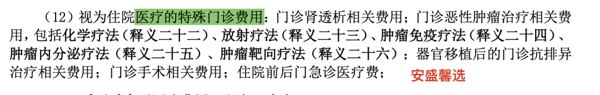
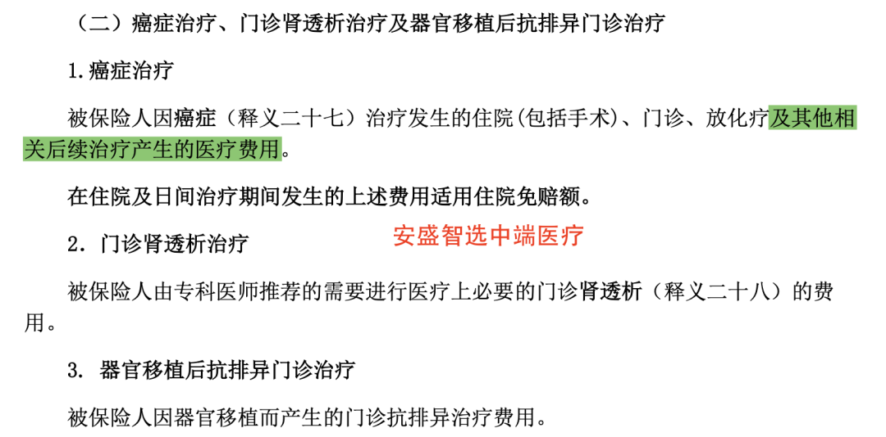
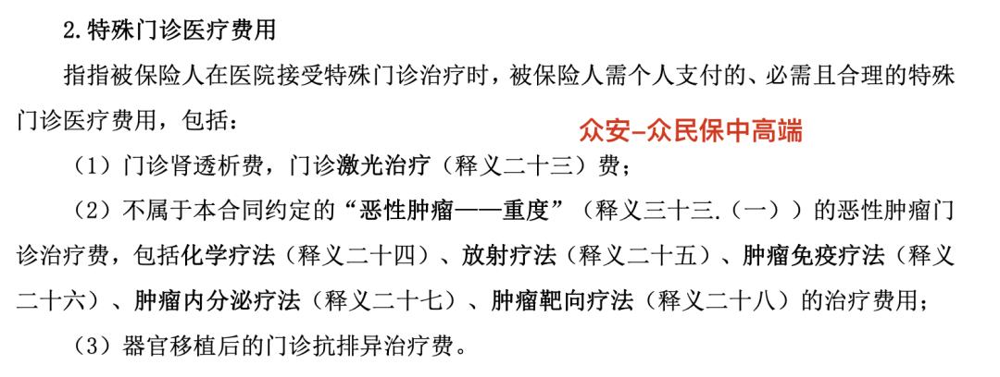

不买好医保的理由，不止一个：一段真实的“理赔历险记”
我常说，一份没有专人服务的保险，和一张废纸的区别，可能只在于——当它出问题时，你连该找谁吵架都不知道。
我朋友的故事，就是一个活生生的例子。
2019年7月，她在支付宝上随手买了份好医保。2024年底，她确诊了乳腺癌。12月，她提交了第一次理赔申请，自费7000多块。
支付宝的理赔结论是：这笔钱，用于抵扣1万块的免赔额了。
我一看，就觉得不对劲。翻开条款，白纸黑字写着：一旦确诊合同约定的重疾，免赔额直接降为0。 这7000多块，应该直接赔到账上，且后续治疗都应正常赔付。
你看，#第一个不买的理由来了：保险公司，也会“出错”。
这出错，可能是无心之失，也可能……你懂的。关键在于，你有没有能力发现，并有理有据地提出异议？
我替朋友给人保打了个电话，指出这个“错误”。对方核实后，默默地把钱正常赔付了。
直到这里，看起来都像是一个“小插曲”。在第一个6年保证续保期内，理赔似乎也还顺利。
但很快，更深的坑出现了。
朋友一直以为，后来每次门诊放化疗，都“全额理赔”了。直到我帮她逐笔核对才发现，很多费用根本没赔。
#第二个不买的理由，就藏在这里：条款，真的不太友好。
好医保的条款规定，对于恶性肿瘤的“门诊放化疗”，只报销纯粹的放疗、化疗费用。而那些为了缓解放疗灼伤皮肤的药、保护肠道的辅助中药……通通不赔。
更让人无力的是，保险公司发的理赔通知，只会冷冰冰地告诉你：“本次赔付XXXX元。” 它永远不会主动告诉你：“本次不予赔付的金额是XXXX元。”
读起来，不免会有一种“全都给我报了”的错觉？我们大多数人，对保险条款的理解力是有限的。这种信息差，成了天然的屏障。
顺势把热门的医疗险条款都扒出来一对比，先来看看【百万医疗】的条款：



再看看中端医疗险：


不得不说，百万医疗，包括众安的众民保中高端医疗险，在【特殊门诊】这项责任的界定上，是比安盛智选中端医疗的范围要小、界定要更严格。
时间来到2024年7月之后，第一个保证续保期结束了。朋友最近一次住院，花了9000多，再次申请理赔。
人保的结论，让人血压飙升：“非初次确诊重疾”，这笔钱，还是用来抵扣免赔额。
朋友彻底懵了，找到我。我一看，也愣住了——同一个乳腺癌，持续治疗，怎么就不是“初次”了？
于是，#第三个不买的理由，浮出水面：当产品赔付率高了，遇上不那么友好的理赔人员，他们真的会想尽办法，你懂的。
我开始了漫长的“电话拉锯战”。从1月7日到16日，前后沟通不下10次。
前几次，对方客服就像复读机，永远重复那句：“不满足‘初次确诊’，需抵扣免赔额。” 我反问：“你的意思是，我朋友的乳腺癌是第二次得？还是她身上长了第二个？”
沟通僵持不下，直到我坚持要求转接上级。这时，我才窥见了核心问题：
第四个，#也是最关键的理由出现了：你永远在“隔靴搔痒”，无法直抵核心。
好医保这类互联网产品的理赔，设计了“防火墙”——你只能对接客服，无法直接联系到真正的理赔审核专员。客服只能照本宣科，传递结论，却没有权限处理争议。你的所有申诉，就像一拳打在棉花上，那种深深的无力感，能消磨掉所有人的耐心。
最后，在我的坚持下，案子被重新审核。但这个过程本身，就是一场耗神费力的“战争”。
所幸，9000多块的不合理拒赔，最终又帮客户申请到直接理赔到账了。
所以，你看。不建议买好医保，真的不止是“有没有人服务”那么简答。
这背后是：
- 出错了，谁能帮你一眼看穿？
- 条款的“不友好”，谁能提前给你划重点、打预防针？
- 对方想“不赔”时，谁能用专业和对方平等对话、据理力争？
- 当流程成为障碍时，谁能找到那条直达问题核心的“捷径”？
保险，买的时候是一纸承诺，赔的时候才见真章。咱们需要一个专业的人，不是为了“买”，而是为了在最关键的时刻，帮咱们守住那份“赔”的确定性。
希望我朋友的这段“理赔历险记”，能给你提个醒。
有些钱，省下的是保费，赌上的，可能是理赔时的心力交瘁，甚至是本该顺利到账的赔款。
我是保小姐，在保险路上，为你保驾护航。

本文由 ShawnCH（何智翔）轉發，透過微信聊天記錄自動提取並整理。 原文連結：https://mp.weixin.qq.com/s?__biz=Mzg3MDgwOTUxMg==&mid=2247485345&idx=1&sn=5f7103f29d7eae235982c1e77d574b31&chksm=cf01c05ab4febe39a110c316bc8de42221937fbc88a0ab3ab00ad924348878b789fe63e76eb7&mpshare=1&scene=1&srcid=0211Rli8hXds3jFywM9laXQS&sharer_shareinfo=39b5679282c124a8dd2e5a6065d963b2&sharer_shareinfo_first=39b5679282c124a8dd2e5a6065d963b2#rd